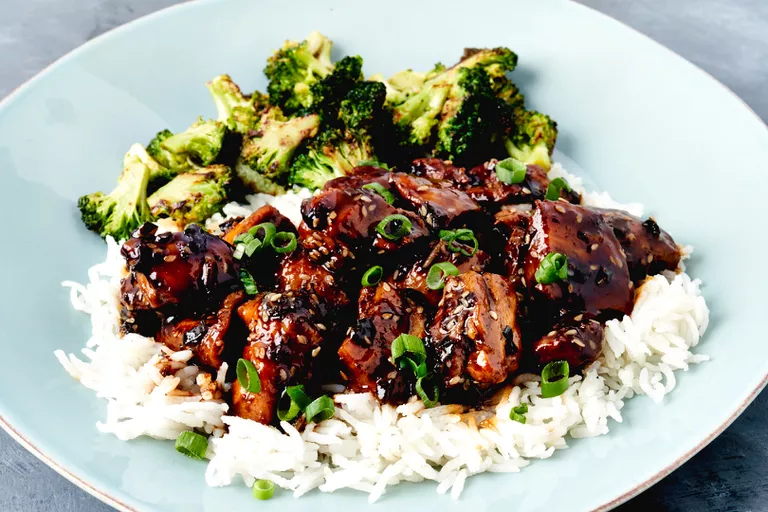

Defined by precision and artistry, Japanese cuisine offers a harmonious blend of flavors and textures. From sushi and sashimi to ramen and tempura, its emphasis on seasonal ingredients and umami creates a culinary experience that's both refined and satisfying.
A rich and hearty bowl of noodles with tender beef, bold miso flavor, and a medley of toppings that make every bite deeply satisfying.

Juicy chicken glazed in a glossy, sweet-savory teriyaki sauce, bursting with flavor and balanced by a hint of caramelization.
